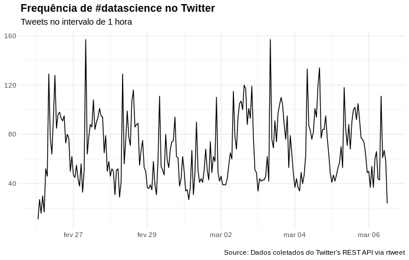
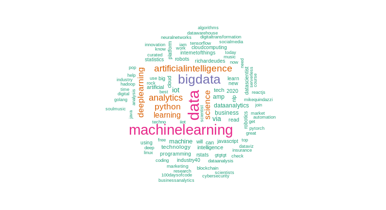
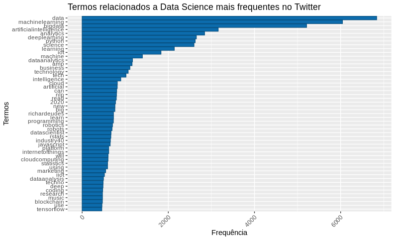
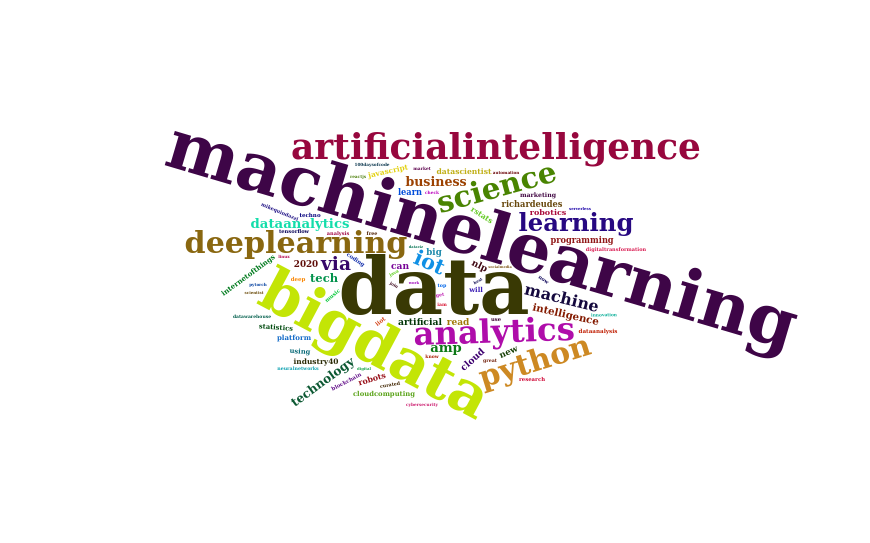
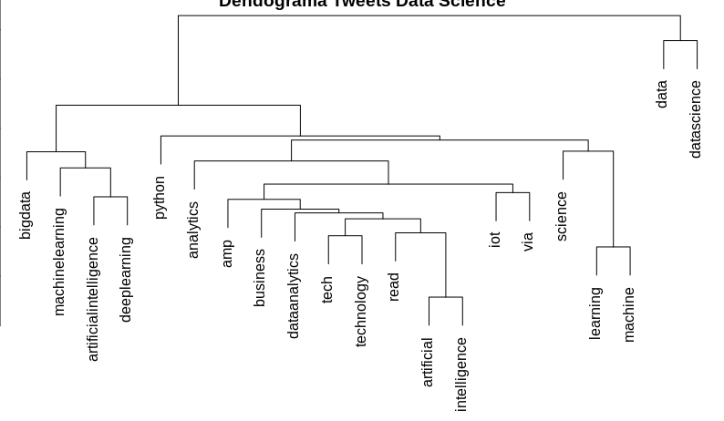

Processamento de Linguagem Natural
2020-03-06
Chapter 1 Mineração de Textos

Atualmente, vivemos na era do Big Data, ou seja, estamos gerando dados a todo momento, porém, na maioria das vezes, são dados não estruturados, como notícias, e-mails e documentos de forma geral. Mineração de textos ou do inglês Text Mining, tem como objetivo, encontrar termos relevantes e estabelecer relacionamento entre eles de acordo com a sua frequência e assim extrair informações de grandes volumes de textos.
1.1 Workflow

Agora, que sabemos que é possível obter informações, de grandes volumes de textos, vejamos como é o processo de obtenção dessas informações:
Começar com uma pergunta: Primeiramente, devemos ter um problema que queremos resolver, ou uma pergunta que desejamos responder, como, por exemplo: O que as pessoas que estão falando sobre data science?
Obter os dados: Agora, que temos um questionamento, precisamos conseguir os dados que o responda, sendo assim, utilizarei como fonte de dados, o que as pessoas estão conversando no Twitter.
Limpar: E com os nossos dados em mãos, iremos realizar outra etapa do processo, que é a limpeza dos nossos dados, removendo caracteres especiais, como acentos, pontuações, tranformando todas as palavras em uma só estrutura, como, minúsculo e removeremos todas as stopwords, que são palavras irrelevantes para a pergunta que queremos responder.
Analisar: Com os nossos dados prontos, iremos realizar uma das partes mais divertidas, que é analisar os nossos dados, onde poderemos aplicar diversas técnicas e verificar se com o dados que possuímos, responderemos à pergunta que nos motivou a analisar esses dados.
Visualizar: Nessa etapa, poderemos visualizar o resultado da nossa análise e assim gerar diversas opções de gráficos, como, por exemplo, nuvem de palavras.
Extrair conhecimento: E chegamos a última, e se tudo estiver ocorrido bem, durante o processo de análise, teremos transformado os nossos dados em informação e agregando ao nosso entendimento prévio sobre o assunto, como resultado, gerado um conhecimento novo, sobre o fato que estávamos analisando.
1.2 Conceitos
Antes, de continuarmos, vamos conhecer alguns conceitos:
- Corpus: Conjuntos de textos.
- Stopwords: Como comentado anteriormente, são palavras que não adicionam sentido ao texto, como palavras de ligação por exemplo e existem listas de stopwords para vários idiomas na internet.
1.3 Código exemplo
Chegou o momento mais divertido onde criaremos um projeto básico de text mining, e para isso, utilizaremos a linguagem de programação R e os seguintes pacotes:
- ‘rtweet’ É um pacote, que permitirá que você se conecte ao Twitter, caso você tenha uma conta, onde você poderá realizar buscas, com no máximo 18 mil tweets.
- ‘tm’ O pacote tm de “Text Mining” é um pacote utilizado para trabalharmos com textos.
- ‘wordcloud’ É um pacote que nos permite visualizar de forma rápida, as palavras, utilizando como critério de tamanho, a frequência.
- ‘tydeverse’ É um pacote, que possui uma coleção de pacotes inclusos, para ajudar na manipulação dos dados.
Primeiramente, vamos instalar os pacotes que serão necessários durante o projeto:
# Instalando os pacotes
install.packages("rtweet")
install.packages("tm")
install.packages("wordcloud")
install.packages("tidyverse")E com os pacotes instalados, devemos carregar os mesmos e assim poderemos utilizar as funções desses pacotes.
Precisaremos de dados e vamos coletar esses dados utilizando a API do Twitter, usando a função de busca ‘search_tweets()’, passaremos a # que iremos buscar, o número de tweets, onde o número máximo é 18 mil, informaremos que não queremos os retweets e a linguagem dos tweets deverá ser em inglês.
# Buscando os tweets com a #datascience
datascience_tweet <- search_tweets(
"#datascience",
n = 18000,
include_rts = FALSE,
lang = "en"
)E essas são as primeiras linhas da busca:
Visualizando a frequência de tweets utilizando #datascience, no intervalo de 1 hora:
# Gerando um gráfico com a frequencia dos tweets no intervalo de 1 hora
datascience_tweet %>%
ts_plot("1 hours") +
ggplot2::theme_minimal() +
ggplot2::theme(plot.title = ggplot2::element_text(face = "bold")) +
ggplot2::labs(
x = NULL, y = NULL,
title = "Frequência de #datascience no Twitter",
subtitle = "Tweets no intervalo de 1 hora",
caption = "\nSource: Dados coletados do Twitter's REST API via rtweet"
)
Vamos começar a mineração dos textos e para isso iremos pegar a (coluna) text e atribuir a uma variável.
Tranformando os nossos textos em um corpus, para assim podermos realizar a limpeza utilizando a função tm_map, onde removeremos os caracteres especiais, transformaremos todas as letras para minúsculas, removeremos as pontuações e as stopwords em inglês.
# Transformando os textos em um corpus
datascience_corpus <- VCorpus(VectorSource(datascience_texto))
# Realizando a limpeza do corpus
datascience_corpus <-
tm_map(
datascience_corpus,
content_transformer(
function(x) iconv(x, from = 'UTF-8', to = 'ASCII//TRANSLIT')
)
) %>%
tm_map(content_transformer(tolower)) %>%
tm_map(removePunctuation) %>%
tm_map(removeWords, stopwords("english"))Após, realizar a limpeza dos nossos textos, chegou o momento de visualizar o resultado em uma nuvem de palavras e iremos utilizar a função brewer.pal, para gerar as cores em hexadecimal, para assim, colorirmos a nossa nuvem.
# Lista de cores em hexadecimal
paleta <- brewer.pal(8, "Dark2")
# Criando uma nuvem de palavras, com no máximo 100 palavras
# onde tenha se repetido ao menos 2 vezes.
wordcloud(
datascience_corpus,
min.freq = 2,
max.words = 100,
colors = paleta
)
Criando uma matriz de documentos-termos (DocumentTermMatrix), removendo os termos menos frequentes da matriz e somando os termos restantes para assim verificar os termos mais frequentes.
# Criando uma matriz de termos
datascience_document <- DocumentTermMatrix(datascience_corpus)
# Removendo os termos menos frequentes
datascience_doc <- removeSparseTerms(datascience_document, 0.98)
# Gerando uma matrix ordenada, com o termos mais frequentes
datascience_freq <-
datascience_doc %>%
as.matrix() %>%
colSums() %>%
sort(decreasing = T)Gerando um dataframe com os termos mais frequentes e visualizando em um gráfico.
# Criando um dataframe com as palavras mais frequentes
df_datascience <- data.frame(
word = names(datascience_freq),
freq = datascience_freq
)
# Gerando um gráfico da frequência
df_datascience %>%
filter(!word %in% c("datascience", "via")) %>%
subset(freq > 450) %>%
ggplot(aes(x = reorder(word, freq),
y = freq)) +
geom_bar(stat = "identity", fill='#0c6cad', color="#075284") +
theme(axis.text.x = element_text(angle = 45, hjus = 1)) +
ggtitle("Termos relacionados a Data Science mais frequentes no Twitter") +
labs(y = "Frequência", x = "Termos") +
coord_flip()
E podemos visualizar o resultado em uma nuvem de palavras, porém utilizaremos outro pacote para gerar a nuvem que é o wordcloud2, pois ele gera uma nuvem de palavras mais bonita que o pacote que utilizamos até o momento, mas antes, temos que instalar o pacote em nosso computador e utilizamos o comando abaixo para realizar a instalação.
# Carregando o pacote 'devtools'
library(devtools)
# Instalando o pacote 'wordcloud2'
devtools::install_github("lchiffon/wordcloud2")E após, instalarmos, carregaremos o pacote wordcloud2 e passaremos o nosso dataframe com os termos mais frequentes para a função wordcloud2 e teremos como resultado o seguinte gráfico.

E podemos visualizar como os nossos termos estão agrupados, e para isso produziremos um dendrograma de agrupamento hierárquico, que é um diagrama de árvore.
# Removendo os termos menos frequentes
datascience_doc1 <- removeSparseTerms(datascience_document, 0.95)
# Clustering 1 = Dendograma
distancia <- dist(t(datascience_doc1), method = "euclidian")
dendograma <- hclust(d = distancia, method = "complete")
plot(dendograma, habg = -1, main = "Dendograma Tweets Data Science",
xlab = "Distância",
ylab = "Altura")